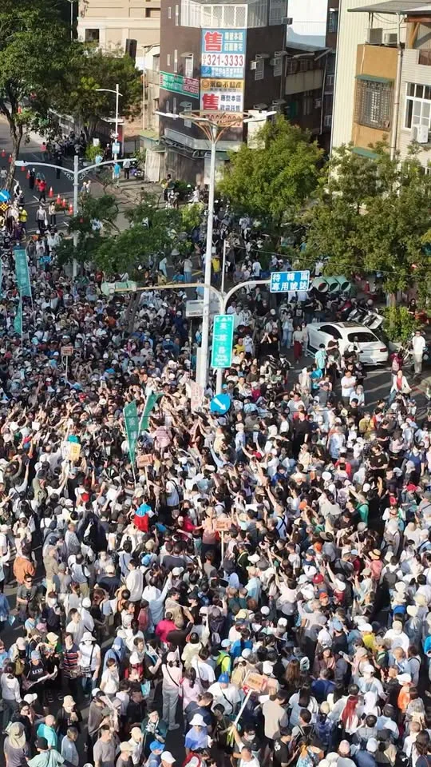
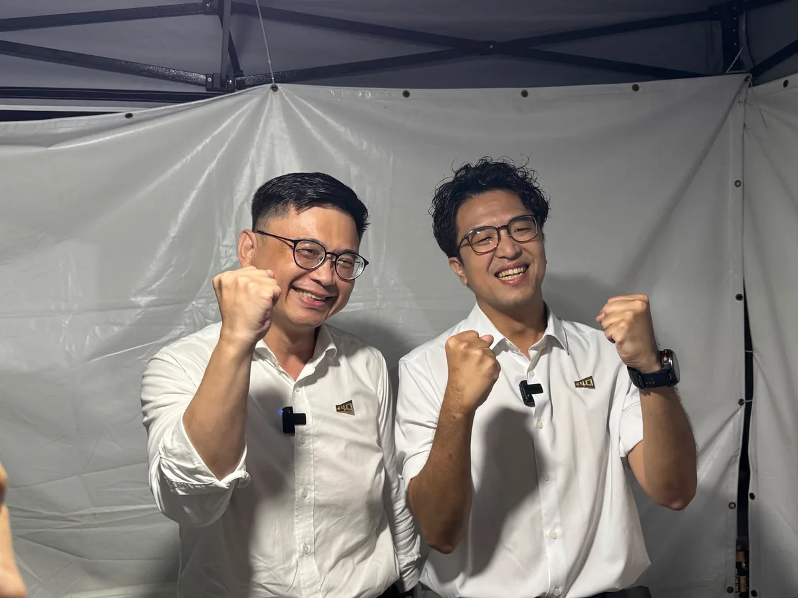

賴瑞隆zenolai
@zenolai:「隆捲風」遇上「洋流」，這次我們划起SUP，一起感受高雄的水上魅力！
Accounts
| 平台 | 帳號 | 已收錄貼文 | 最後更新 |
|---|---|---|---|
| 官網 | https://zenolai.oen.tw/ | 0 | — |
| https://www.facebook.com/zenolai2/ | 134 | 2026-09-20 08:46 | |
| https://www.instagram.com/zenolai/ | 124 | 2026-09-19 12:40 | |
| Threads | https://www.threads.com/@zenolai | 143 | 2026-09-20 08:48 |
| YouTube | https://www.youtube.com/@%E8%B3%B4%E7%91%9E%E9%9A%86 | 62 | 2026-09-11 18:13 |
| LINE 官方帳號 | https://lin.ee/zW17s0a | 0 | — |
Timeline
顯示 463 / 463 則
@zenolai:「隆捲風」遇上「洋流」，這次我們划起SUP，一起感受高雄的水上魅力！

傳承民主精神，帶領高雄走向世界大舞台！ 民主進步黨創黨40週年，今晚的紀念音樂會充滿了回憶和感動。40年前，民主前輩們在街頭唱著爭取自由的歌；40年後的今天，換我們接棒，繼續為台灣的未來打拚。 今晚和大家一起唱《快樂的出帆》，也讓我想到這幾年高雄越來越熱鬧。很多朋友都說，來高雄看演唱會真的很過癮。未來，我會延續這份熱潮，讓各項盛典在高雄越辦越精彩。我要讓全世界知道，高雄的工業很強、科技很強，辦演唱會同樣是世界一流，讓高雄成為大家來了還想再來的城市。 這幾年的轉型，讓高雄的蛻變有目共睹。我一直相信，高雄值得站上更大的舞台，而我的責任，就是把燈光、音響再開大一點，讓這座城市的光芒被全世界看見。 40年前，前輩為民主打下基礎；40年後，我們接棒繼續往前。讓我們一起快樂出帆，帶著高雄走向世界。
@zenolai:洋流到港！隆捲風來襲！謝謝高雄！ @pumashen

大家準備好讓 台北 沈伯洋 吃不完帶著走了嗎？ 不只讓要讓他嚐嚐南部的甜，也要讓他感受我們高雄的熱情！ 明天，賴瑞隆 x 沈伯洋 合體登場！從英雄路出發，走進港灣，用行動展現咱對這座城市的愛。 邀請大家揪朋友、帶家人，把線上的加油，化成現場最有力的相挺，明天下午4點，我們英雄路見！ ⏰ 時間｜9月19日（六）下午4點 📍 集合｜五福三路、英雄路口 🚶 路線｜集合出發 → 英雄路 → Focus 13珊瑚廣場 → 愛河灣水樂園 🔔 提醒｜因候選人後續尚有民進黨40週年音樂會行程，現場不開放簽名

@zenolai:台北、高雄，一北一南，一座是臺灣首都、國際都會，一座是海洋首都、南方門戶。兩座引領臺灣向前的重要城市，有著截然不同的性格。這次邀請 @pumashen PUMA來到高雄，就是要帶他感受南臺灣的熱情與魅力。 英雄路，串起高雄不同時代的城市記憶。過去，前往金門、馬祖服役的軍人，順著英雄路走向光榮碼頭，啟程捍衛臺灣；六年前，高雄市民也曾在英雄路上相聚，為民主自由發聲。不同的時代、同樣的地方，英雄路始終承載著高雄人守護臺灣的堅定信念。 如今同樣的港灣，已轉型成為高雄璀璨的亞洲新灣區；矗立於光榮碼頭的高雄流行音樂中心，充滿音樂、展演，榮耀這座城市的蛻變。從昔日港區到今日城市水岸，英雄路見證了高雄的過去與現在，也見證這座城市脫胎換骨。

@zenolai:台北、高雄，一北一南，一座是臺灣首都、國際都會，一座是海洋首都、南方門戶。兩座引領臺灣向前的重要城市，有著截然不同的性格。這次邀請PUMA來到高雄，就是要帶他感受南臺灣的熱情與魅力。 英雄路，串起高雄不同時代的城市記憶。過去，前往金門、馬祖服役的軍人，順著英雄路走向光榮碼頭，啟程捍衛臺灣；六年前，高雄市民也曾在英雄路上相聚，為民主自由發聲。不同的時代、同樣的地方，英雄路始終承載著高雄人守護臺灣的堅定信念。 如今同樣的港灣，已轉型成為高雄璀璨的亞洲新灣區；矗立於光榮碼頭的高雄流行音樂中心，充滿音樂、展演，榮耀這座城市的蛻變。從昔日港區到今日城市水岸，英雄路見證了高雄的過去與現在，也見證這座城市脫胎換骨。

上次和PUMA合唱我喜歡你，這次到青年論壇再唱一次，我有沒有進步？🎤

明天和美鳳姐有約，一起看見高雄的美！📺✨ 這次我和美鳳姐、小鹿、阿甘走訪亞洲新灣區，欣賞港灣風景，聊聊高雄這些年的轉變！ 明天記得打開電視，跟著《美鳳有約》感受高雄的熱情與魅力！ 📍9/18（五）播出時間 ▪️民視第一台（第151台）10:30首播 ▪️民視無線台（第6台）12:30首播、17:30重播

@zenolai:洋流到港，隆捲風來襲！ 我們週六見！ @pumashen

香火萬年佑黎民，總統墨寶獻神祇💐 超過240年歷史的大寮朝中宮是地方信仰中心，陪伴一代又一代鄉親，見證大寮一路發展、成長。 一間廟宇守護地方，一座城市照顧每一個人的生活。今天來到朝中宮參香祈福，也代表 賴清德 總統致贈「仁德濟民」墨寶，感謝朝中宮長年守護地方、凝聚鄉親的力量。 這些年，大寮持續向前，從道路、排水、公園，到社會住宅、國道七號、捷運紅線延伸等重大交通建設，都有賴中央的支持，地方民眾的合作。 祈求玄天上帝庇佑台灣風調雨順、國泰民安。我會一直把鄉親的需要放在心上，讓不同世代都能在高雄安心生活，也願朝中宮香火萬年、神庥廣被。 高雄市議員 李雨庭 洪村銘 大寮林園要改變 ＃厝邊阿中張耀中

「隆捲風」遇上「洋流」，這次我們划起SUP，一起感受高雄的水上魅力！

@zenolai:英雄路、愛河灣大爆滿！ 大家的熱情讓我們寸步難行，但台北高雄一定繼續向前行！ 洋流到港，隆捲風來襲！今天和 @pumashen 沈伯洋從英雄路走向港灣，沿途握不完的手、接連不斷的加油聲，讓我們前進的每一步，都感受到高雄最真摯熱烈的支持！ 今天我們在此走過的每一步都不容易。從謝長廷市長整治愛河、陳其邁代理市長拆除港邊高牆、陳菊市長啟動亞洲新灣區建設，到我有幸在2013年擔任海洋局長時策劃 #黃色小鴨，再到 @chenchimai 陳其邁市長推動輕軌成圓、完善交通，透過熱門IP吸引人潮、帶動招商與灣區經濟。歷任市長、市府團隊與中央攜手投入，一棒接一棒，才有今天的港灣風景，我很珍惜能參與其中。 承接前人的努力，更要為下一代開路。今天握緊的手、喊出的加油，我和沈伯洋都會記在心裡，帶著大家對台北、高雄的盼望，我會接好這一棒，繼續為高雄打拚！也拜託大家陪我們走到最後，把今天的熱情化為行動，今年 11/28 邀請家人、朋友一起出門投下關鍵一票。 感謝今天每一位站出來相挺的朋友！過去我把黃色小鴨丟進水裡，期待今年11/28以後，我可以驕傲地說：「我是第一個把台北市長丟下水的高雄市長！」

芋筍飄香，來甲仙感受山城魅力！🏞️ 一早參加一年一度的 #甲仙芋筍節，和陳其邁市長一起體驗大小丑操偶。除了甲仙芋、麻竹筍等在地農產，今年還有「偶泥家族」貓咪裝置藝術、精彩表演和市集。身為家裡養了三隻貓的貓派，來到甲仙當然不能錯過！ 從貓巷到「貓元年」，甲仙用貓咪彩繪和藝術創作，為老街和商圈增添新的特色。這幾年，陳其邁市長和市府團隊陸續推動甲仙公園、街區及人行環境改善，也謝謝邱議瑩委員長期為甲仙、東高雄爭取資源，從農民權益、農會設備到地方建設，都投入許多心力。尤其甲仙化石館目前正等待整修，明年完成後，將進一步帶動商圈及觀光發展。 未來，我會繼續協助甲仙芋、麻竹筍、青梅提升品牌價值，串聯山林、溫泉與周邊景點，發展山城旅遊；交通、醫療方面，持續推動東高雄交通建設及醫療資源整合，照顧山城鄉親的生活需求。 陳其邁 Chen Chi-Mai 登真-邱議瑩 林富寶 高雄市議員 林慧欣

@zenolai:大家準備好讓 @pumashen 吃不完帶著走了嗎？ 不只讓要讓他嚐嚐南部的甜，也要讓他感受我們高雄的熱情！ 明天，賴瑞隆 x 沈伯洋 合體登場！從英雄路出發，走進港灣，用行動展現咱對這座城市的愛。 邀請大家揪朋友、帶家人，把線上的加油，化成現場最有力的相挺，明天下午4點，我們英雄路見！ ⏰ 時間｜9月19日（六）下午4點 📍 集合｜五福三路、英雄路口 🚶 路線｜集合出發 → 英雄路 → Focus 13珊瑚廣場 → 愛河灣水樂園 🔔 提醒｜因候選人後續尚有民進黨40週年音樂會行程，現場不開放簽名
台北、高雄，一北一南，一座是臺灣首都、國際都會，一座是海洋首都、南方門戶。兩座引領臺灣向前的重要城市，有著截然不同的城市性格。這次邀 台北 沈伯洋 來到高雄，就是要帶他感受南臺灣的熱情與魅力。 ＃英雄路，串起高雄不同時代的城市記憶。過去，前往金門、馬祖服役的軍人，順著英雄路走向光榮碼頭，啟程捍衛臺灣；六年前，高雄市民也曾在英雄路上相聚，為民主自由發聲。不同的時代、同樣的地方，英雄路始終承載著高雄人守護臺灣的堅定信念。 如今同樣的港灣，已轉型成爲高雄璀璨的亞洲新灣區；矗立於光榮碼頭的高雄流行音樂中心，充滿音樂、展演，榮耀這座城市的蛻變。從昔日港區到今日城市水岸，英雄路見證了高雄的過去與現在，也見證這座城市脫胎換骨。 台北被群山環繞，發展出豐富的登山步道與城市縱走，PUMA說他要用運動驛站串聯大台北天際線，打造東亞第一登山城；而港灣就是生活風景的高雄自由開闊，愛河與海相連，創造極佳的水上運動環境，形塑出高雄海洋城市的性格與特性。 來到高雄，不能錯過水岸生活體驗！這禮拜六我邀請沈伯洋一起滑SUP ，我們不只要比誰能撐到最後，還要一起承擔重任，南北串連、山海相應，做市民的Support！

台北、高雄，一北一南，一座是臺灣首都、國際都會，一座是海洋首都、南方門戶。兩座引領臺灣向前的重要城市，有著截然不同的城市性格。這次邀請PUMA來到高雄，就是要帶他感受南臺灣的熱情與魅力。 英雄路，串起高雄不同時代的城市記憶。過去，前往金門、馬祖服役的軍人，順著英雄路走向光榮碼頭，啟程捍衛臺灣；六年前，高雄市民也曾在英雄路上相聚，為民主自由發聲。不同的時代、同樣的地方，英雄路始終承載著高雄人守護臺灣的堅定信念。 如今同樣的港灣，已轉型成爲高雄璀璨的亞洲新灣區；矗立於光榮碼頭的高雄流行音樂中心，充滿音樂、展演，榮耀這座城市的蛻變。從昔日港區到今日城市水岸，英雄路見證了高雄的過去與現在，也見證這座城市脫胎換骨。 台北被群山環繞，發展出豐富的登山步道與城市縱走，PUMA說他要用運動驛站串聯大台北天際線，打造東亞第一登山城；而港灣就是生活風景的高雄自由開闊，愛河與海相連，創造極佳的水上運動環境，形塑出高雄海洋城市的性格與特性。 來到高雄，不能錯過水岸生活體驗！這禮拜六我邀請沈伯洋一起滑SUP ，我們不只要比誰能撐到最後，還要一起承擔重任，南北串連、山海相應，做市民的Support！
@zenolai:明天和美鳳姐有約，一起看見高雄的美！📺✨ 這次我和美鳳姐、小鹿、阿甘走訪亞洲新灣區，欣賞港灣風景，聊聊高雄這些年的轉變！ 明天記得打開電視，跟著《美鳳有約》感受高雄的熱情與魅力！ 📍9/18（五）播出時間 ▪️民視第一台（第151台）10:30首播 ▪️民視無線台（第6台）12:30首播、17:30重播

前鎮漁港應該是台灣在遠洋漁業上，跟世界連結最值得發出的名片。 今天，我與行政院 張惇涵 Chang Tun-Han 秘書長、農業部 ＃陳駿季 部長 會勘前鎮漁港，並與 陳其邁 Chen Chi-Mai 市長討論後續營運規劃，正式拍板啟動兩年試營運，從運銷中心到船員會館，逐項改善、加速啟用。 ⚓️ 落實漁工人權，打造安心歇息的環境 為了照顧國際漁工，我們爭取到船員會館每晚200元住宿費，努力朝100元繼續爭取，未來由政府出700元與船東共同負擔；漁工免負擔，同時全面提升居住品質與安全，讓每一位為台灣漁業努力的船員都能好好休息。 🐟接軌國際標準，加速運銷中心大升級 未來，試營運期間將由中央全額補助，攤商免費進駐，一起提升服務品質。同時，新的運銷中心，將符合HACCP的食安衛生標準，以及出口歐盟的條件，這是為了提升市場的競爭力，也確保消費者吃的安心。 前鎮漁港不但是全國最大的遠洋漁業基地，更是關乎上千億元產值、外籍船員權益與台灣國際形象的指標。照顧好每一位倚海而生的人，是我對港都最堅定的承諾。 我知道，改變習慣的過程需要一點時間磨合，協助大家順利度過這段過程，未來在嶄新的現代化漁港好做生意、安心休息，也讓更多人走進前鎮漁港，讓全世界都看見高雄漁業的魅力！

洋流到港，隆捲風來襲！ 我們週六見！ 台北 沈伯洋

香火萬年佑黎民，總統墨寶獻神祇💐 超過240年歷史的大寮朝中宮是地方信仰中心，陪伴一代又一代鄉親，見證大寮一路發展、成長。 一間廟宇守護地方，一座城市照顧每一個人的生活。今天來到朝中宮參香祈福，也代表 賴清德 總統致贈「仁德濟民」墨寶，感謝朝中宮長年守護地方、凝聚鄉親的力量。 這些年，大寮持續向前，從道路、排水、公園，到社會住宅、國道七號、捷運紅線延伸等重大交通建設，都有賴中央的支持，地方民眾的合作。 祈求玄天上帝庇佑台灣風調雨順、國泰民安。我會一直把鄉親的需要放在心上，讓不同世代都能在高雄安心生活，也願朝中宮香火萬年、神庥廣被。 高雄市議員 李雨庭 洪村銘 大寮林園要改變 ＃厝邊阿中張耀中
早安！ 昨天海上滑SUP ，今天陸上跑馬拉松🏃 歡迎大家，有事沒事，都來高雄市！ 林岱樺 高雄小金剛許智傑 康裕成 高雄市議長 邱俊憲 高雄市議員 黃飛鳳 高雄市議員 陳慧文 高雄市議員 林智鴻 高雄市議員 蘇致榮 鳳山阿榮 #長庚紀念醫院永慶盃路跑

@zenolai:洋流游的太快就像隆捲風🌪️ 我們到台北了，準備上台🎤 @pumashen

洋流即將到港，隆捲風蓄勢待發🌪️ 各路好漢，今天下午4點英雄路集合！ 天氣晴朗又遇 台北 沈伯洋 洋流來襲，記得做好防曬、隨時補充水分，我們不見不散！ ⏰ 時間｜9月19日 （六）下午4點 📍 集合｜五福三路、英雄路口 🚶 路線｜集合出發 → 英雄路 → Focus 13珊瑚廣場 → 愛河灣水樂園 🔔 提醒｜因候選人後續尚有民進黨40週年音樂會行程，現場不開放簽名

大家準備好讓 台北 沈伯洋 吃不完帶著走了嗎？ 不只讓要讓他嚐嚐南部的甜，也要讓他感受我們高雄的熱情！ 明天，賴瑞隆 x 沈伯洋 合體登場！從英雄路出發，走進港灣，用行動展現咱對這座城市的愛。 邀請大家揪朋友、帶家人，把線上的加油，化成現場最有力的相挺，明天下午4點，我們英雄路見！ ⏰ 時間｜9月19日（六）下午4點 📍 集合｜五福三路、英雄路口 🚶 路線｜集合出發 → 英雄路 → Focus 13珊瑚廣場 → 愛河灣水樂園 🔔 提醒｜因候選人後續尚有民進黨40週年音樂會行程，現場不開放簽名
台北、高雄，一北一南，一座是臺灣首都、國際都會，一座是海洋首都、南方門戶。兩座引領臺灣向前的重要城市，有著截然不同的城市性格。這次邀 台北 沈伯洋 來到高雄，就是要帶他感受南臺灣的熱情與魅力。 ＃英雄路，串起高雄不同時代的城市記憶。過去，前往金門、馬祖服役的軍人，順著英雄路走向光榮碼頭，啟程捍衛臺灣；六年前，高雄市民也曾在英雄路上相聚，為民主自由發聲。不同的時代、同樣的地方，英雄路始終承載著高雄人守護臺灣的堅定信念。 如今同樣的港灣，已轉型成爲高雄璀璨的亞洲新灣區；矗立於光榮碼頭的高雄流行音樂中心，充滿音樂、展演，榮耀這座城市的蛻變。從昔日港區到今日城市水岸，英雄路見證了高雄的過去與現在，也見證這座城市脫胎換骨。 台北被群山環繞，發展出豐富的登山步道與城市縱走，PUMA說他要用運動驛站串聯大台北天際線，打造東亞第一登山城；而港灣就是生活風景的高雄自由開闊，愛河與海相連，創造極佳的水上運動環境，形塑出高雄海洋城市的性格與特性。 來到高雄，不能錯過水岸生活體驗！這禮拜六我邀請沈伯洋一起滑SUP ，我們不只要比誰能撐到最後，還要一起承擔重任，南北串連、山海相應，做市民的Support！
上次和PUMA合唱我喜歡你，這次到青年論壇再唱一次，我有沒有進步？🎤

明天和美鳳姐有約，一起看見高雄的美！📺✨ 這次我和美鳳姐、小鹿、阿甘走訪亞洲新灣區，欣賞港灣風景，聊聊高雄這些年的轉變！ 明天記得打開電視，跟著《美鳳有約》感受高雄的熱情與魅力！ 📍9/18（五）播出時間 ▪️民視第一台（第151台）10:30首播 ▪️民視無線台（第6台）12:30首播、17:30重播

前鎮漁港應該是台灣在遠洋漁業上，跟世界連結最值得發出的名片。 今天，我與行政院 張惇涵 Chang Tun-Han 秘書長、農業部 ＃陳駿季 部長 會勘前鎮漁港，並與 陳其邁 Chen Chi-Mai 市長討論後續營運規劃，正式拍板啟動兩年試營運，從運銷中心到船員會館，逐項改善、加速啟用。 ⚓️ 落實漁工人權，打造安心歇息的環境 為了照顧國際漁工，我們爭取到船員會館每晚200元住宿費，努力朝100元繼續爭取，未來由政府出700元與船東共同負擔；漁工免負擔，同時全面提升居住品質與安全，讓每一位為台灣漁業努力的船員都能好好休息。 🐟接軌國際標準，加速運銷中心大升級 未來，試營運期間將由中央全額補助，攤商免費進駐，一起提升服務品質。同時，新的運銷中心，將符合HACCP的食安衛生標準，以及出口歐盟的條件，這是為了提升市場的競爭力，也確保消費者吃的安心。 前鎮漁港不但是全國最大的遠洋漁業基地，更是關乎上千億元產值、外籍船員權益與台灣國際形象的指標。照顧好每一位倚海而生的人，是我對港都最堅定的承諾。 我知道，改變習慣的過程需要一點時間磨合，協助大家順利度過這段過程，未來在嶄新的現代化漁港好做生意、安心休息，也讓更多人走進前鎮漁港，讓全世界都看見高雄漁業的魅力！

洋流到港，隆捲風來襲！ 我們週六見！ 台北 沈伯洋

📣全台第一在高雄📣 中央社宅有公托，新手爸媽神隊友 #三民明仁公共托嬰中心 今天正式開幕！這裡不只是高雄第76處公托，更是全台第一間設置在國家住都中心興辦社宅內的公共托嬰中心。接下來包括左營福山安居、仁武安居也將陸續設置公托，讓社宅成為真正支持年輕家庭的生活基地。 今年3月，我向內政部協調，加速社宅簽約、點交流程，就是希望公托能夠如期開幕，感謝內政部、住都中心、衛福部與高雄市政府攜手合作，讓「明仁好室」不只提供安心居住的家，也把托育服務直接帶進社區。 陳其邁 Chen Chi-Mai 市長上任以來，高雄持續增加社宅與公托，今年底將達到88處公托，完成「區區有公托」。未來，我會接棒推動生育津貼每胎5萬元、加碼育兒津貼至每月最高1萬元，並擴增公托據點，以及孕產醫療與心理支持，讓高雄市政府成為爸爸媽媽育兒路上最可靠的神隊友！ 李昆澤 康裕成 高雄市議長 何權峰 高雄市議員 邱俊憲 高雄市議員 湯詠瑜 詠瑜新選擇 鄭孟洳 理想青年 張以理 曾俊傑服務團隊